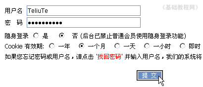
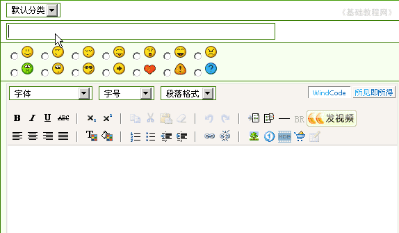
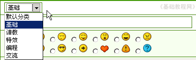
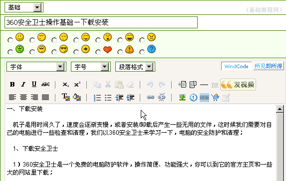
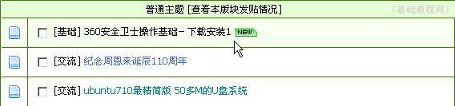

论坛新手操作基础
五、发帖 返回目录
在论坛里交流一段时间，或者自己碰到一些问题、寻求帮助时，就可以发帖，发帖是自己的主题，所以要求要高些，下面我们来看一个练习；
1、进入论坛首页
1）输入网址，例如在地址栏输入http://bbs.laxjyj.com/后回车即可登录论坛首页；

2）此时在左上角显示“您尚未 登录 注册”，点击“登录”链接进入注册页面；

3）在登录页面，输入用户名、密码，选择cookie，然后点击“提交”，过一会儿就登录成功，在页面左边出现自己的用户名；

2、发帖
1）首先进入发帖的版区，选择一个跟主题相关的版区，比如自己的文章可以找文学版区，如果是上网操作问题，可以到电脑版区，这儿进入“隆安水库”版区；
2）进入版区后，在页面的左上角有一个“新主题”按钮，这个就是发新帖的按钮，点击进入发帖页面；
3）按照从上到下的顺序逐步填写，一般要写的有：分类、题目、内容，还可以加入一些小图片；

4）按照自己的内容，点击“默认分类”按钮，选择一个跟主题相同的分类，如果遗忘发帖的时候会提示没有选择分类；

５）然后写上题目和内容，为了便于阅读，每个自然段应该空一行，避免挤成一团；

6）检查一下没有错误，就可以点下面的“提交”按钮，提交之前可以点旁边的“预览”按钮，预览一下帖子的效果；
7）稍等一会儿，出来提示发帖成功，自动回到所发表的文章中，阅读一下自己的文章；
注意：如果文章比较长，发帖之前应选中以后，复制一下，以免网络问题，造成内容丢失；
8）发帖以后在主题列表中就出现你的帖，还可以参考一下别人的帖子，互相学习，关于帖子的修饰我们放在后面课程中继续学习；

本节学习了在论坛发表自己主题帖的基本方法，如果你成功地完成了练习，请继续学习下一课内容；
本教程由86团学校TeliuTe制作|著作权所有
基础教程网：http://teliute.org/
美丽的校园……
转载和引用本站内容，请保留作者和本站链接。